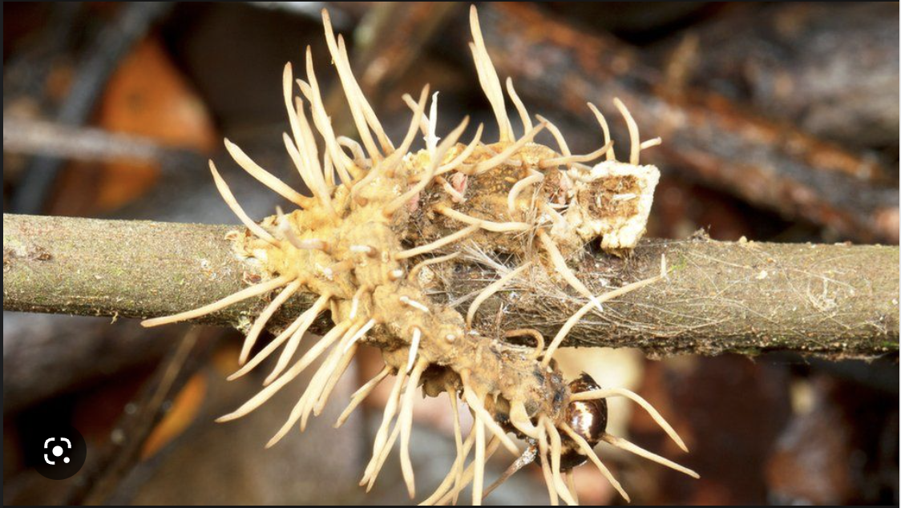

Trending in Science
Starship
55.5K Tweets
Sports . Trending
Joe Rogan
5,218 Tweets
The New York Times
. Yesterday
'Last of Us' Keeping you up? Here's the True Danger of Killer Fungi Cordyceps

COVID-19 . LIVE
COVID-19: News and updates for Boston City
Bloomberg
. Yesterday
Google Invests Almost $400 Million in ChatGPT Rival Anthropic.
Trending in United States
Cordyceps
15.8K Tweets